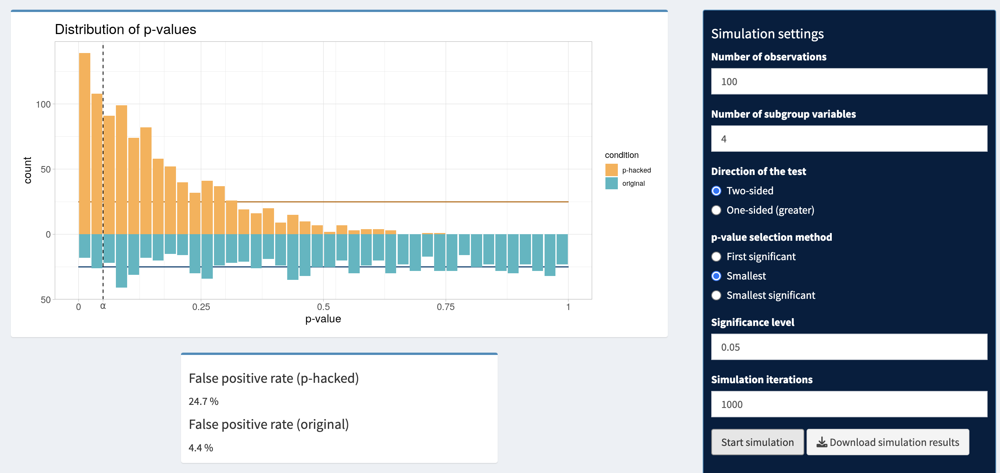

Previous: Chapter 20 - Traditional Statistical Tools
Chapter 21 - Lying with Statistics#
We are very nearly done with this course on statistical methods in psychology research. So far you have learned how to read, clean, summarize, and visualize data. You’ve also learned several ways to model data, making predictions about a variable based on information in other variables. Finally, you’ve learned how to evaluate those models and making inferences about the state of the world based on data.
All of this empowers you to seek insights from data. However, you also have the power to do dangerous things with data. You’ve learned about how easy bias and misinterpretation are. Given the objective veneer that statistics bring to our arguments, it behooves us to wield these statistics responsibly. In this final chapter, we will learn about the consequences of using statistics badly, and how to look out for these practices in our own and others’ research.
21.1 The replication crisis#
Most people think that science is a reliable way to answer questions about the world. When our physician prescribes a treatment, we trust that it has been validated as effective through research. We have similar faith that the airplanes that we fly in aren’t going to fall from the sky.
However, there has been an increasing concern that science may not always work as well as we think. In 2004, the renowned psychologist Daryl Bem published a book chapter called “Writing the Empirical Journal Article” in order to give advice to budding scientists on how to publish their research. Bem provided suggestions such as:
Which article should you write? There are two possible articles you can write: (1) the article you planned to write when you designed your study or (2) the article that makes the most sense now that you have seen the results. They are rarely the same, and the correct answer is (2).
In another section, he continues:
Analyzing data Examine them from every angle. Analyze the [variable levels] separately. Make up new composite indices. If a datum suggests a new hypothesis, try to find further evidence for it elsewhere in the data. If you see dim traces of interesting patterns, try to reorganize the data to bring them into bolder relief. If there are participants you don’t like, or trials, observers, or interviewers who gave you anomalous results, drop them (temporarily). Go on a fishing expedition for something — anything — interesting.
At first glance, this may seem like good advice. Data are just numbers that represent the world, so we should do whatever we can to reveal the message they communicate, right?
Unfortunately, as we have seen in the prior chapters, there are many ways numbers can lead us astray. Without being careful, the inferences we make about data can be false positives, imprecise, biased, etc. There are many ways to analyze data, and those data analyses can lead to different conclusions. If we have a particular conclusion we want to reveal through data (either about the size of an effect or just a significant finding in general), we can often “massage” the data in a particular way in order to reveal that conclusion. British economist Ronald Coase captured this reality succinctly, when he wrote: “If you torture the data long enough, it will confess to anything.”
The sorts of data manipulations in search of a significant result that Bem recommended are now known as Questionable Research Practices (QRPs). But in 2004, not many people thought of them that way. They came to the center stage of psychology in 2011 when the same Daryl Bem published a paper claiming to have discovered evidence of psychic abilities in his participants. Specifically, he claimed that his participants demonstrated a significant effect of precognition when they were able to predict information in the future at levels significantly above chance.
This was a shocking claim, and attracted a lot of attention. Upon closer inspection, other researchers pointed out that Bem had engaged in the following QRPs:
The paper published the results of 9 studies, but the sample sizes varied across studies
Different studies appear to have been lumped together or split apart
The studies allow many different hypotheses, and it’s not clear which were planned in advance
Most of the p-values are very close to 0.05
It’s not clear how many other studies were run but not reported
If the data are re-analyzed with a pre-registered plan, the results don’t replicate. There was no robust evidence of precognition.
But how could such a hugely respected scientist get it so wrong? Surely this must be a fluke? A team of researchers (together called the Open Science Collaboration) were perturbed by this turn of events, and set out to find how common these QRPs were across the field. This systematic investigation led to a 2015 paper called “Estimating the reproducibility of psychological science”.
It would not be an exaggeration to say that this paper was Earth-shattering for the field of psychology. The large team of researchers chose 100 well-cited psychology studies and attempted to reproduce the results originally reported in the papers. Whereas 97% of the original papers had reported statistically significant findings, only 37% of these effects were statistically significant in the replications. It seemed like the majority of psychological knowledge was built on nothing but hot air. And although psychology got much of the attention (and criticism), in the ensuing years it also became clear that other fields of research suffered from the same crisis of replicability, such as cancer biology, chemistry, economics, and other social sciences.
Clearly, the traditional way of doing research was failing us. Statistics based on QRPs and the incentives of hunting for anything that was significant lead to a majority of research being unreplicable, which stalls progress and wastes billions of dollars in research funding. It was time for a better way of doing research.
In the decade since, the field has been evolving. Different statistical standards are being debated, and problematic practices are diminishing. There is still a ways to go to figure out what the best practices are, but in the mean time we have learned which practices are definitely harmful. In this chapter, we will discuss some of these “statistical sins” so that you know to avoid them in your own research, and to be sensitive to their use in research that you read.
21.2 P-hacking#
The p-value is a core component of null hypothesis significance testing in the Frequentist framework. A p-value is defined as the probability to obtain a result at least as extreme as the observed one if the null hypothesis is true (i.e., if there is no effect in the population). If the p-value is smaller than the \(\alpha\) threshold, then the test result is labeled “significant” and the null hypothesis is rejected. Researchers who are interested in showing an effect in their data are therefore eager to obtain small p-values that allow them to reject the null hypothesis and claim the existence of an effect.
The first major statistical sin we will discuss is the kind of slicing and dicing of a dataset that Bem recommended in the pursuit of a significant p-value. Collectively, these practices are known as p-hacking - hacking into your dataset to find whatever configuration of variables will result in a significant p-value.
You can do a great many things while p-hacking:
choosing slightly different predictor/outcome variables
transforming variables
controlling for other variables
removing certain outliers
splitting the data into subgroups
Et cetera. No matter the method, the overarching process of p-hacking is that you first check the significance results of a model. If it is not significant, you try a different version of the model, then check the significance again. You keep repeating this process with slightly different versions of the model until you finally arrive at the coveted p < 0.05.
This is different than the situations in prior chapters where we have fit multiple versions of models. In those cases, we made decisions about the best model to use based on metrics that didn’t have to do with how significant this model was. For checking model assumptions, we looked at things like leverage or heteroscedasticity to tell us if we should fit a different model. For model comparison, we already had two or more models in mind to compare, and looked for statistically significant differences in how much error they explained.
P-hacking, on the other hand, is when you start with one model but decide it isn’t good enough because it doesn’t have a significant p-value. Or you fit multiple models, but the one you choose to report is the one with the lowest p-value (without knowing if the models are significantly different from each other).
The problem with this approach is what we first learned about in chapter 17 - Type I error in multiple comparisons. In Frequentist statistics, if an effect is truly equal to 0 in the population, setting an \(\alpha\) level to 0.05 means that there is a 5% chance our analysis in a sample will return a false positive - find a significant effect, when there shouldn’t be one. But if we test many models over and over, the chance that any of them is a false positive starts to accumulate more than 5%. Even if there is no effect in the population, the probability is very high that at least one hypothesis test will (erroneously) show a significant result if a sufficiently large number of tests are conducted. P-hackers then report this one significant result and claim to have found an effect.
Below are some simulations that show the effects of p-hacking on the Type I error rate (conducted on this website). For example, let’s say we measured the same outcome variable in 2 slightly different ways. We could p-hack by fitting a model to each of these 2 different outcomes, and reporting whichever model turned out best. If the true effect was 0, across 1000 samples like this, we’d want only 5% of them to erroneously give us a significant result. But by reporting the best out of the two, this inflates our Type I error by nearly double, to 9.3%.
Another p-hacking method is to use different outlier removal methods until a significant p-value is found. There are a great many outlier detection methods, as seen among the options in the image below. If we try a different version of our model with each of these methods and report the best one, we get a Type I error rate of 25.5%.
Subgroup analysis is when you at first find a nonsignificant effect in the full dataset, so you decide to check the effect in specific subgroups of the data. E.g., in just males, or Asian participants, or people over 50, etc. The more subgroups you fit your model in, the more models you are running total, and the higher the Type I error goes.
21.3 HARKing#
P-hacking wouldn’t be so much of a problem if all the models that were fit were reported and multiple comparison correction was performed on them. We don’t always know the best model we should be testing, so we might want to compare multiple ones.
However, besides inflating Type I error, p-hacking is pernicious because it hides the fact that multiple models were ever examined. Usually when p-hacking is done, researchers only report the one significant model they found as if that was the one model they intended to test all along.
Doing this is called Hypothesizing After Results are Known - HARKing for short. It obfiscates the fact that exploratory analysis was done (testing multiple competing versions of models without a clear prior hypothesis), and instead implies that confirmatory analysis was done instead (having a specific hypothesis ahead of time).
Exploratory analysis is fine to conduct as a starting point, but we shouldn’t stop there in research. If a dataset suggests one particular model is promising, we should replicate that result in another dataset to be sure that it’s robust. We need to do confirmatory research with an a priori hypothesis before we can be truly confident in our results.
With HARKing, exploratory research is passed off as confirmatory. It’s an attempt to gain the trust (and publication clout) that confirmatory research earns, without doing the work of the confirmatory research. HARKing can involve describing post hoc hypotheses as if they were a priori, and also excluding any a priori hypotheses that were not supported.
Examples of what HARKing could look like include:
An author searches through data involving several different variables, finds which ones are significantly related to each other, and then writes a paper as if they had an initial hypothesis about those variables specifically.
An author fits a model and finds an effect that is opposite to what they initially expected, so they rewrite the whole paper as if that flipped effect was their initial hypothesis.
An author has three main hypotheses that support a theory, but data only supports one of the hypotheses. They write the paper as if that was the only hypothesis they intended to test.
HARKing hurts scientific progress because it keeps us from learning about null results, and it hides p-hacking. We should always be open to adjusting our hypotheses and theories based on data. But we shouldn’t pretend that the updated opinion is what we thought all along. We should discuss how the evidence supports or refutes our real a priori hypotheses no matter what the result is, and we should do the extra step of confirmatory research when we create new hypotheses based on initial data.
21.4 Alternatives to p-hacking and HARKing#
P-hacking has become a dirty word in research, and no one wants to admit to intentionally doing it. But we all want our hypotheses to be right and to push the bounds of knowledge. So intentionally or not, we will all be tempted at one time or another to p-hack. Thus, you should get in the habit of good research practices, and put some systems in place to help you stay honest.
What should you do to avoid p-hacking and HARKing in your own research? There are a number of options:
Pre-register a specific hypothesis: In chapter 14 we first encountered the idea of pre-registration. This is when you write down your specific hypothesis, in a place where other people can see it. This holds you accountable for reporting the results of what you initially planned, no matter what those results are. It also forces you to specify a particular model form and variable operationalization ahead of time, so that you’re not tempted to try out different options at the analysis step.
Conduct replications: If you’re unsure of a specific hypothesis at first, it is still okay to do exploratory research! Collect some data, test out a bunch of options, see what works. But you shouldn’t stop there. If you find something promising in the data that you didn’t initially plan, you should conduct confirmatory research in a new sample of data where you try to replicate the results of your first study.
Control for multiple comparisons: If you don’t have the time or funds to collect a whole new dataset but you still want to investigate several different models, you can control the Type I error across all of them by using a more stringest p-value threshold to decide something is significant. Methods we learned about in chapter 17 like Bonferroni correction, Tukey’s Honestly Significant Difference Test, or Benjamini-Hochberg False Discovery Rate are options for controlling Type I error across multiple comparisons.
Multiverse analysis: Another option is to steer away from the idea of significance testing entirely, and report all the effect estimates across all models in a process known as multiverse analysis. Here, you don’t know the specific operationalization of a variable you should use, or which control variables you should include. But if your effect is robust, it should be detectable in some form across most of these different versions of the model. So, you fit all the models and report the estimated effect size and confidence interval/credible interval for all of them, as a way of looking at the full multiverse of possibilities. If your effect is coming through in the majority of these model options, it’s probably a real effect (and the central tendency of all these estimates is probably the real effect size). If your estimates vary wildly or the effect is only present in a couple of model options, it’s likely not a robust effect - it would only be discoverable by p-hacking.
Be transparent: Whatever you choose to do, you should be transparent about it. Write down every decision you make and every outcome that happens, no matter how messy or complicated that process is. In addition, it is good practice to host your study materials, data, and analysis scripts on open science websites like the Open Science Framework, so that other people can check your work and replicate what you’ve done. A lot of folks are nervous about being transparent, because they’re afraid of the world finding out if and when they make a mistake. But if someone did make a mistake in research, wouldn’t you think it was important that we as a community can find it and correct it? Being fully transparent can be scary at first, but we’re doing complicated stuff at the bounds of human knowledge - no one expects you to always be perfect. Ultimately, transparency helps science move forward most productively.
21.5 How to detect QRPs in research#
If it’s important to keep QRPs out of our own research, the flip side is that it is important to detect it when others do it. That way, we know if we can trust their research or if we need to cast a skeptical eye (and maybe perform a replication).
Sadly, p-hacking and HARKing is so problematic because they are very hard to detect for sure. In one study where just one result is reported, you really have no way of knowing if this was an honest a priori hypothesis or a p-hacking job. Nothing about the study can tell you for sure.
But there are signs that might make you more or less suspicious. Things that are more likely to happen when p-hacking is in the picture include:
When multiple results are reported in a paper, most of the p-values are in the range 0.01 < p < 0.05. When p-hacking, the goal is to just get to some result that is p < 0.05. When a true effect is 0, it is easier to find a false positive p=0.04 than p=0.004.
If modeling decisions seem weird to you. If a researcher says they are studying the effect of one construct on another, but they model them with operationalizations that are odd choices or not standard without good explanations, that may be a sign that they tested the standard versions of the variables first but found them to be nonsignificant.
If effect sizes are unrealistically large. Remember that Cohen’s rules of thumb for effect sizes are that large effects are observable in real life; medium effects are observable in data to a trained eye; and small effects need statistics to detect. If a study reports a large effect size for something that no one seems to have noticed before, that should raise a warning flag that that result might be a false positive.
On the other hand, even if someone reports a p=0.04, large effect, or strange version of a model, if they also followed best scientific practices, we can be more confident that those results are reliable. These best practices include:
They pre-registered an initial hypothesis, and you can see that it was uploaded/dated before the study was conducted.
Their reported results are a mix of significant and nonsignificant findings.
They have good theoretical justification for their measurement and modeling decisions, or are making decisions based on prior research.
21.6 Other sins#
P-hacking is one way we can end up lying to ourselves and to the public about what conclusions we can safely draw from data. But it’s also important to keep in mind all the other ways we’ve learned about that modeling can be done incorrectly. Even if you define an a priori hypothesis, report all your results, and correct for any multiple comparisons, using your statistics inappropriately will lead to faulty conclusions. In this section, we will summarize the bad statistical practices we have discussed earlier in the course and link to where we explored them in more detail.
Ch 19, violating the assumptions of linear models: If the assumptions of the general linear model are violated by the data/modeling procedure, the estimates and/or the standard errors we measure will be biased and we may come to the wrong conclusion about the size/precision of that estimate.
Ch 12, binning/dichotomizing continuous predictors: Mis-specifying the datatype of continuous data can change how much error our model explains and the estimated effect size of the variable.
Ch 17, lack of direct comparison: Estimates of effects, and their associated p-values, are just estimates. Their value is partially determined by sampling error. If the point estimate of one effect is larger than the point estimate of another, that doesn’t necessarily mean those effects are significantly different from each other. Different conditions need to be compared to each other in the same model, and different models need to be compared to each other with model selection procedures.
Ch 18, low power: Our power to detect an effect of a particular size as significant is directly proportional to the sample size of our study. When research has low power, we commit more Type II errors and the positive predictive value of the entire literature is lower - i.e., a higher proportion of published studies are false positives.
Ch 16, over-interpreting non-significant results: In Frequentist statistics, we can use significance testing to reject the null hypothesis based on an effect that is significantly different from 0, but we can never support that the true effect is actually 0. If you get a nonsignificant result, you shouldn’t infer that that means the effect does not exist. There simply wasn’t enough evidence to detect it, if it does. If you ever want to build support for a null hypothesis, you should use other methods like Bayesian statistics.
Ch 12, correlation vs. causation: We walk a slippery slope when talking about the meaning of our statistical analyses. The tools we’ve learned in this class help us explain variation in an outcome variable with information from predictor variables, but that doesn’t mean the predictor variables caused the outcome. At the same time, we often construct our models on what we think the causal structure is in the data generation process, and modeling the incorrect causal structure can result in model bias. If your goal with statistics is to move beyond simply making predictions and get to understanding the data generation process, you should keep the likely causal structure in mind. But the results of the general linear model by itself won’t tell you if that causal idea is real. You’ll have to use more sophisticated statistical tools paired with research design like experimental manipulation or longitudinal changes.
Ch 7, misleading visualization: Even if we get our modeling process spot on, it is possible to mislead others about what conclusions they should draw about it by using misleading visualizations. Chapter 7 was all about the appropriate ways to visualize our results. Adding to that, we should remember to include visualizations of uncertainty into our model reports, such as error bars or confidence bounds.
Chapter summary#
After reading this chapter, you should be able to:
Explain the process of p-hacking and how it is different than normal model comparison
List examples of p-hacking methods
Explain why p-hacking is a problem
Define HARKing and how it is different from good research practice
Explain methods to avoid QRPs in your own work
Identify red and green flags of p-hacking in other research
Remember other ways we can use statistics badly